|
Castlevania :
Legends
Title

Sonia Belmont
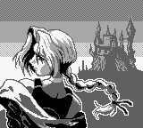
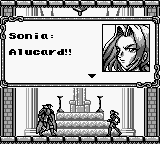
Game Select
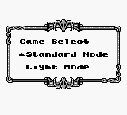
เมื่อเข้าเกมจะเลือกเล่นได้ 2 โหมดด้วยกัน คือ
Standard Mode - เล่นแบบธรรมดา เมื่อโดนโจมตี ความสามรถของ "แส้"
จะลดลง
Light Mode - เล่นแบบง่าย "แส้" จะมีความรุนแรงอยู่ตลอด
(เป็น "แส้" ระดับ 3 ตลอด)
Password
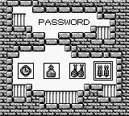
ภาคนี้จะไม่มีระบบเซฟเกม แต่จะใช้ Password แทน
ซึ่ง Password ของ Stage ต่างๆ มีดังนี้
STAGE 2:
Standard: axe, axe, blank, knife
Light: cross, axe, axe, watch
STAGE 3:
Standard: axe, cross, blank, candles
Light: cross, cross, blank, meat
STAGE 4:
Standard: watch, blank, knife, meat
Light: candles, axe, watch, candles
STAGE 5:
(5-1)
Standard: watch, holywater, meat, candles
Light: candles, holywater, meat, candles
(Secret Stage)
Standard: knife, blank, candles, meat
Light: meat, blank, meat, candles
(5-2)
Standard: knife, candles, candles, candles
Light: meat, candles, candles, meat
Ability
นอกจาก Sonia จะใช้ "แส้" ซึ่งมี 3 ระดับแล้ว
Sonia ยังมีความสามารถอื่นๆ อีก 2 ชนิด คือ
1. โซล (Soul)
โซลจะได้รับหลังจากการปราบบอสไปแล้ว
ซึ่งโซลจะมีอยู่ทั้งหมด 5 ชนิด คือ
|
ประเภทของโซล
|
ความสามารถ
|
จำนวน "หัวใจ" ที่ใช้
|
|
Wind
|
หยุดการเคลื่อนไหวของศัตรู (ไม่สามารถใช้กับบอสได้) |
5
|
|
Ice
|
ฟื้นฟู HP |
20
|
|
Flame
|
แสงกระพริบ โจมตีศัตรูทั้งหมด (ไม่สามารถใช้กับบอสได้) |
5
|
|
Saint
|
ยิงคลื่นพลังออกไปด้านหน้า |
1
|
|
Magic
|
ทำลายศัตรูทั้งหมด (ไม่สามารถใช้กับบอสได้) |
5
|
การใช้โซล ทำได้โดยการกด "บน" + "โจมตี"
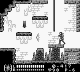
(Saint Soul)
2. Burning Mode
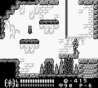
Burning Mode คือ Sonia จะชาร์ตพลัง ทำให้อยู่ในสภาวะอมตะ
ทำได้โดยการกด "โจมตี" + "กระโดด" (A+B)
โดยจะใช้เกท B ด้านล่าง หากเกท B หมด ก็จะออกจาก Burning Mode
Item
Sonia สามารถเก็บ Item ได้จากการทำลาย "เชิงเทียน"
ซึ่งภายในมี Item อยู่หลายชนิด ดังนี้
1 Up
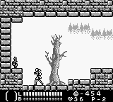
(เพิ่มจำนวนชีวิตให้แก่ Sonia)
Chicken
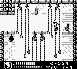
(ฟื้นฟู HP ให้แก่ Sonia)
Crystal
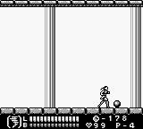
(เพิ่มระดับพลังของ "แส้")
Menu
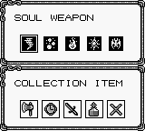
แสดงจำนวนโซล และ Item ที่เก็บได้
โดยสามารถเลือกโซลที่ต้องการใช้จากหน้าจอนี้
เข้าหน้าจอนี้โดยการกดปุ่ม "Select"
Game Over
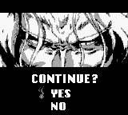
ในภาคนี้ไม่มีระบบเซฟ ดังนั้นเมื่อตายจนหมด
จะขึ้นหน้าจอมาให้ Continue
หากเลือก Continue จะเริ่มเล่นที่ฉากเดิม
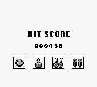
หากเลือก No จะมีคะแนนและ Password ออกมาให้ดู
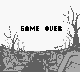
และจะเจอฉาก Game Over
Map
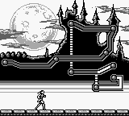
ภาคนี้เนื้อเรื่องจะดำเนินไปตาม Stage
ซึ่งจะมีเส้นทางให้ดูตามแผนที่
Stage 1
เป้าหมาย เก็บ Axe
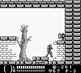
Trap
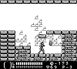
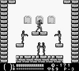
(ตกลงมามีแต่ตายเท่านั้น)
Boss 1
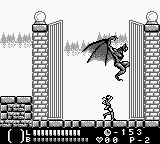
Boss Die
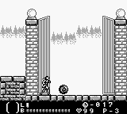
(เมื่อปราบบอสได้ จะได้รับ โซล)
(บอสตัวแรกให้ Wind)
Stage 2
เป้าหมาย เก็บ Clock
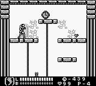
Trick
(ในตอนแรกจะมีหนาม)
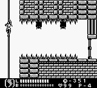
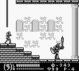
(ลงมาจัดการตัวนี้)
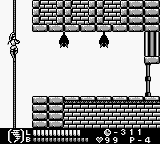
(กลับขึ้นไปใหม่ หนามหายไปหมดแล้ว)
Boss 2
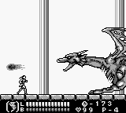
(เมื่อปราบได้จะได้รับโซล Ice)
Stage 3
เป้าหมาย เก็บ Sword
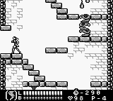
(ทางแยกนี้ไปทางซ้าย)
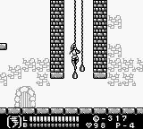
(ปีนขึ้นไปด้านบน)
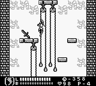
(ได้แล้ว Sword)
Boss 3
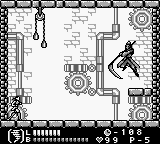
(เมื่อปราบได้ จะได้รับโซล Flame)
Stage 4
เป้าหมาย เก็บ Holy Water
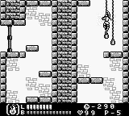
(ทางแยกนี้ปีนขึ้นไปก่อน)
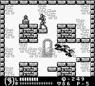
(ได้แล้ว Holy Water)
Boss 4 Alucard
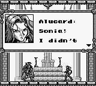
เมื่อ Sonia เจอกับ Alucard
Alucard บอกว่าเขาจะไปจัดการกับพ่อ (Dracula) เอง
เพราะนี่เป็นเรื่องของครอบครัว
แต่ Sonia ไม่ยอม ทั้งคู่เลยต้องต่อสู้กัน
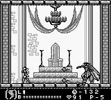
(เมื่อปราบได้ จะได้รับโซล Saint)
Stage 5
เป้าหมาย ค้นหาทางลับ
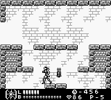
(บริเวณนี้ตกลงไปได้)
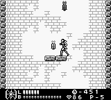
(เจอเทียนสีแปลกๆ เมื่อทำลายพื้นด้านล่างจะเปิดออก)
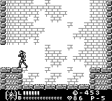
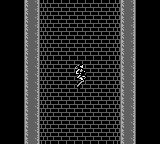
(พื้นเปิดแล้ว ลงไปได้)
Secret Stage
เป้าหมาย เก็บ Holy Cross
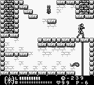
(ทางแยกนี้เลี้ยวขวา)
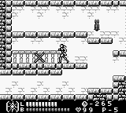
(ได้แล้ว Holy Cross)
Boss
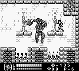
(เมื่อปราบได้ จะได้รับโซล Magic)
Last Stage
Boss Dracula
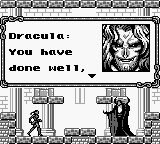
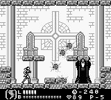
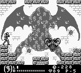
Ending
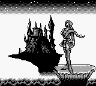
* Note : หากเก็บ Item ไม่ครบ จะเห็นฉากจบเพียงรูปบนเท่านั้น
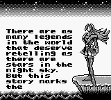
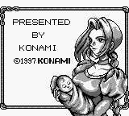
|